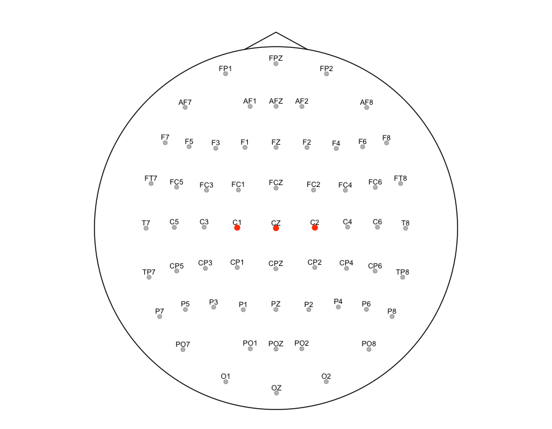
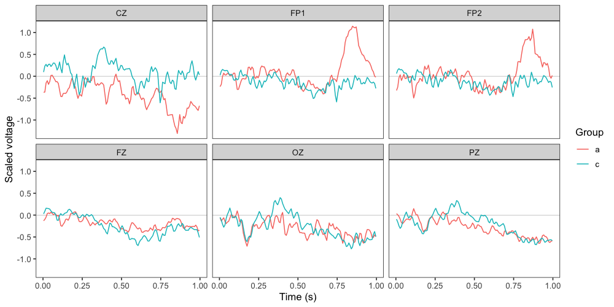
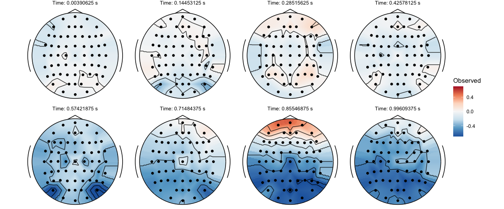
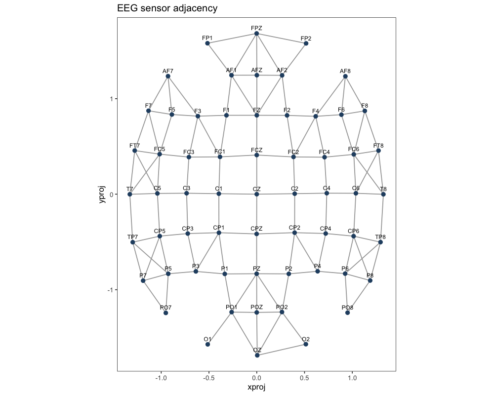
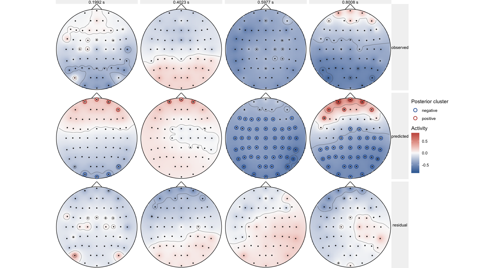
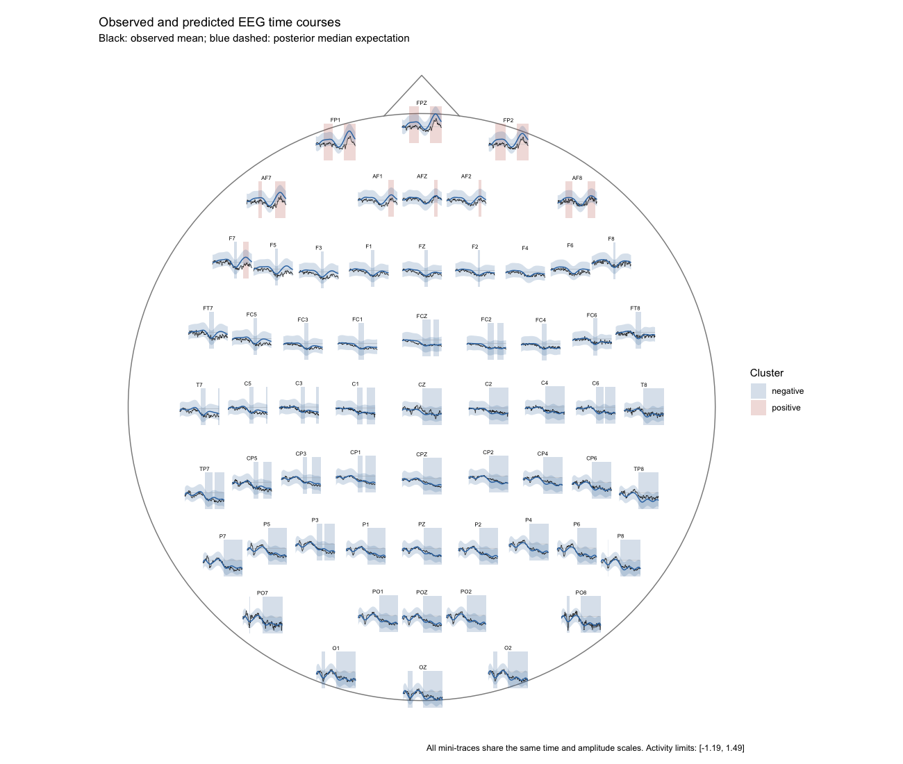
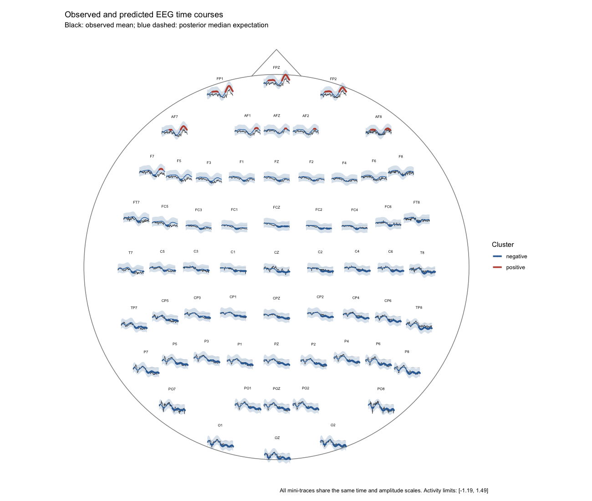

Overview
This vignette illustrates how to model the spatial and temporal distribution of EEG activity using Bayesian generalised additive multilevel models (BGAMMs) in neurogam. The spatial dimension is represented by two projected electrode coordinates, and the temporal dimension by continuous time. The analysis combines a smooth spatial–temporal model, posterior inference at each electrode and time point, and graph-based clustering across neighbouring electrodes and consecutive time points.
The workflow provides:
- Sensor coordinates and an automatically inferred, inspectable adjacency graph.
- A shared spatial–temporal tensor-product smooth with participant-level varying intercepts.
- One-sample inference or contrasts between two categorical conditions.
- Cluster summaries and exact sensor-by-time cluster memberships.
- Scalp maps of observed, predicted, and residual activity, and sensor-level time courses with either rectangular or line-segment cluster highlighting.
Importing and preparing the EEG data
We use example EEG recordings from the eegkitdata package and sensor coordinates supplied with eegkit. The dataset contains multiple trials recorded at 256 Hz for 20 participants, with group, channel, and time identifiers. The example below selects five participants per group and keeps every second time sample to make the preprocessing and figures reasonably fast.
library(neurogam)
library(ggplot2)
library(dplyr)
# Use the ggplot2 neurogam theme
theme_set(theme_neurogam() )
# Import eegdata
data("eegdata", package = "eegkitdata")
data("eegcoord", package = "eegkit")
# Inspect the variables and the montage
# dplyr::glimpse(eegdata)
# head(eegcoord[, c("xproj", "yproj")] )
# Choose five participants from each group for this worked example
subjects_keep <- eegdata |>
distinct(subject, group) |>
group_by(group) |>
slice_head(n = 5L) |>
ungroup() |>
pull(subject)
# Keep every second time sample, the raw time variable indexes samples
eeg_subset <- eegdata |>
dplyr::filter(
subject %in% subjects_keep,
time %% 2L == 0L
)
# Coordinates are identified by row names in eegcoord
eeg_coords <- eegcoord |>
mutate(channel = rownames(eegcoord) ) |>
select(channel, xproj, yproj)
# Use a common x/y scale so that relative sensor distances are preserved
spatial_scale <- max(
stats::sd(eeg_coords$xproj),
stats::sd(eeg_coords$yproj)
)
voltage_scale <- stats::sd(eeg_subset$voltage, na.rm = TRUE)
# Compute each participant's mean waveform before multilevel modelling
# Preserve group so that a between-participant contrast remains possible
eeg_data <- eeg_subset |>
summarise(
voltage = mean(voltage, na.rm = TRUE),
.by = c(subject, group, channel, time)
) |>
left_join(eeg_coords, by = "channel") |>
dplyr::filter(!is.na(xproj), !is.na(yproj), is.finite(voltage) ) |>
mutate(
subject = factor(subject),
group = droplevels(factor(group) ),
channel = as.character(channel),
time = (time + 1) / 256,
xproj = xproj / spatial_scale,
yproj = yproj / spatial_scale,
voltage = voltage / voltage_scale
)
# There must be one unique coordinate pair per sensor
sensors <- eeg_data |>
distinct(channel, xproj, yproj) |>
arrange(channel)
# Display a few rows
head(eeg_data)
#> subject group channel time voltage xproj yproj
#> 1 co2a0000364 a FP1 0.00390625 -0.009262861 -0.5157747 1.580363
#> 2 co2a0000364 a FP1 0.01171875 0.163076204 -0.5157747 1.580363
#> 3 co2a0000364 a FP1 0.01953125 0.761465353 -0.5157747 1.580363
#> 4 co2a0000364 a FP1 0.02734375 0.842567312 -0.5157747 1.580363
#> 5 co2a0000364 a FP1 0.03515625 0.426776990 -0.5157747 1.580363
#> 6 co2a0000364 a FP1 0.04296875 0.305092899 -0.5157747 1.580363The response is divided by a single constant (voltage_scale) and is therefore expressed in scaled voltage units. The same scaling applies to model predictions and observed waveforms; to recover the original microvolt scale, multiply by voltage_scale. We do not independently standardise the two spatial axes, because anisotropic scaling would distort electrode distances and the automatically estimated adjacency graph.
The original recordings provide only post-stimulus time points. No pre-stimulus baseline is available here; therefore, testing voltage against zero is not the same as testing a baseline-corrected ERP against zero.
Visualise the sensors and observed activity
plot_sensors(
sensors,
show_points = TRUE,
show_labels = TRUE,
label_col = "channel",
label_repel = FALSE,
highlight = c("C1", "CZ", "C2"),
label_only_highlight = FALSE,
dim_others = TRUE,
head_expand = 1.1
)
A quick quality-control plot shows grand-average sensor waveforms. For clarity, we display a small set of channels.
channels_to_show <- intersect(
c("FZ", "CZ", "PZ", "OZ", "FP1", "FP2"),
unique(eeg_data$channel)
)
if (!length(channels_to_show) ) {
channels_to_show <- head(sort(unique(eeg_data$channel) ), 6L)
}
eeg_data |>
filter(channel %in% channels_to_show) |>
summarise(
voltage = mean(voltage),
.by = c(group, channel, time)
) |>
ggplot(aes(x = time, y = voltage, colour = group)) +
geom_hline(yintercept = 0, linewidth = 0.25, colour = "grey75") +
geom_line(linewidth = 0.5) +
facet_wrap(~channel, ncol = 3L) +
labs(x = "Time (s)", y = "Scaled voltage", colour = "Group")
We can also display observed scalp maps at selected times using plot_eeg(). Spatial interpolation is used only for visualisation; our subsequent inference evaluates model predictions at the actual sensor locations.
all_times <- sort(unique(eeg_data$time) )
selected_times <- all_times[
unique(round(seq(1, length(all_times), length.out = 8L) ) )
]
observed_maps <- eeg_data |>
summarise(
voltage = mean(voltage),
.by = c(channel, time, xproj, yproj)
) |>
filter(time %in% selected_times)
plot_eeg(
x = observed_maps,
type = "topo",
sensors = sensors,
times = selected_times,
grid_res = 120,
value_col = "voltage",
facet_nrow = 2,
fill_limits = "global_quantile"
)
Estimating and inspecting EEG sensor adjacency
Spatio-temporal clusters require a definition of which sensors are neighbours. make_sensor_adjacency() estimates a symmetric adjacency matrix from projected coordinates by selecting spatial nearest neighbours and optionally rejecting excessively long edges. The default k = 4 and distance_factor = 1.8 are heuristics, not guaranteed to represent the physical electrode montage perfectly.
sensor_adjacency <- make_sensor_adjacency(
data = sensors,
sensor_id = "channel",
spatial_id = c("xproj", "yproj"),
k = 4,
distance_factor = 1.8
)
plot_sensor_adjacency(
data = sensors,
adjacency = sensor_adjacency,
sensor_id = "channel",
spatial_id = c("xproj", "yproj"),
show_labels = TRUE
)
Inspect the graph for unexpected connections across distant scalp regions, isolated sensors, and gaps near the head boundary. You can adjust k and distance_factor or use an externally defined sensor adjacency matrix. The same matrix should be retained for reproducible inference. The built-in plotting function draws edges in the 2D projection, not on a physical three-dimensional head surface.
For convenience, testing_through_time(sensor_adjacency = NULL, ...) constructs adjacency automatically. We pass our inspected graph explicitly in the fitting example below so that the clustering neighbourhood is fixed and documented.
Fitting a spatiotemporal BGAMM
Model specification
Let \(y_{i,s,t}\) denote the participant-level mean voltage for participant \(i\), sensor \(s\), and time \(t\). Our initial model is
\[ y_{i,s,t} \sim \mathcal{N}(\mu_{i,s,t},\sigma^2), \qquad \mu_{i,s,t}=\beta_0+f(x_s,y_s,t)+b_i, \]
where \(f(x,y,t)\) is a smooth function of two electrode coordinates and time, and \(b_i\) is a participant-specific random intercept. We use a tensor-product smooth with a two-dimensional spatial marginal and a one-dimensional temporal marginal:
# Conceptual brms formula, using participant-level mean observations:
outcome_mean ~
t2(
xproj, yproj, time,
bs = c("ps", "ps"),
k = c(15, 10),
d = c(2, 1)
) +
(1 | participant)The d = c(2, 1) argument defines two tensor-product marginals: one comprising \((x,y)\) and another comprising time. Accordingly, k = c(15, 10) specifies the basis dimensions for two marginals, rather than a separate basis dimension for each of the three coordinates. The k values control basis flexibility, not the exact number of observed electrodes or time samples. See the mgcv tensor-product documentation and Pedersen et al. (2019).
neurogam constructs the formula automatically. We can inspect it without fitting anything:
formula_st <- make_bgam_formula(
family = gaussian(),
multilevel = "summary",
predictor_type = "none",
time_id = "time",
space_id = c("xproj", "yproj"),
kvalue = c(15, 10),
bs = c("ps", "ps"),
tensor_d = c(2, 1),
varying_smooth = FALSE,
use_se = FALSE
)
formula_st
#> outcome_mean ~ 1 + t2(xproj, yproj, time, bs = c("ps", "ps"), k = c(15, 10), d = c(2, 1), full = FALSE) + (1 | participant)The high-level workflow works with participant-level means, not necessarily the original trial-level observations. Because we have already averaged trials within each participant × sensor × time cell and have not supplied a standard error, we use use_se = FALSE. When supplying trial-level observations with two or more repetitions per cell, or a precomputed standard error column, use_se = TRUE allows measurement-error modelling via se(outcome_sem, sigma = TRUE). These two approaches do not imply identical likelihoods or uncertainty estimates.
Fit the integrated model
The following block fits the model and immediately evaluates posterior expected voltage at each observed sensor × time point. The fitted brmsfit object and clustering results are returned together by testing_through_time().
results_st <- testing_through_time(
data = eeg_data,
participant_id = "subject",
outcome_id = "voltage",
predictor_id = NA_character_,
sensor_id = "channel",
time_id = "time",
space_id = c("xproj", "yproj"),
family = gaussian(),
multilevel = "summary",
use_se = FALSE,
varying_smooth = FALSE,
kvalue = c(15, 10),
bs = c("ps", "ps"),
tensor_d = c(2, 1),
sensor_adjacency = sensor_adjacency,
chance_level = 0,
rope = 0,
threshold = 10,
threshold_type = "both",
n_post_samples = 500,
chunk_size = 256L,
re_formula = NA,
warmup = 1000,
iter = 3000,
chains = 2,
cores = 2,
backend = "cmdstanr",
seed = 20261027,
threads = brms::threading(threads = 4),
file = "cache/eeg_st_results"
)Runtime and convergence. Spatiotemporal models can take many hours. Begin with a small, balanced subset of participants and decimated time points when checking model specification, then increase data resolution and basis dimensions for the scientific analysis. cores = 2 and threads = brms::threading(threads = 4) can use approximately eight CPU threads when two chains run concurrently; this is not equivalent to four total cores. Within-chain threading may not speed up every model. For final inference, inspect convergence diagnostics (including \(\widehat R\), effective sample sizes, divergences, and posterior predictive checks) and consider additional chains if computational resources permit. See the brms threading guide.
Predictions use re_formula = NA, targeting the fitted population-level mean rather than an individual participant’s random intercept. This does not itself incorporate a distribution of unobserved participant-specific spatial–temporal deviations; such smooths are not currently fitted by this interface.
Reuse an independently fitted brms model
If you already fitted a model directly with brms::brm() (for example, voltage ~ t2(xproj, yproj, time, ...) + (1 | subject)), the fitted object’s data and variable names may not match the standardised testing_through_time() interface. Instead, use the lower-level analyse_bgam_spatiotemporal() function, which does not refit the model:
# `st_gam` is an existing brmsfit object using subject, channel, xproj,
# yproj, time, and voltage as in the original direct-brms example.
prediction_grid <- merge(
sensors,
data.frame(time = sort(unique(eeg_data$time) ) ),
by = NULL,
sort = FALSE
)
prediction_grid$subject <- eeg_data$subject[1L]
model_path <- "cache/eeg_st_model.rds"
model_st <- readRDS(model_path)
results_external <- analyse_bgam_spatiotemporal(
model = model_st,
newdata = prediction_grid,
sensor_id = "channel",
time_id = "time",
spatial_id = c("xproj", "yproj"),
sensor_adjacency = sensor_adjacency,
null_value = 0,
rope = 0,
threshold = 10,
draw_ids = seq_len(500),
chunk_size = 256L,
re_formula = NA
)Ensure that the prediction grid uses the same coordinate and outcome scaling as the independently fitted model. A model fitted to all trials has a different likelihood from a model fitted to participant-level means; their predictions and uncertainties need not agree exactly.
Posterior inference and spatiotemporal clusters
Summarising the fitted spatiotemporal analysis
The returned object has dedicated summary() and plot() methods, so in most cases there is no need to access its internal components directly.
summary(results_external)
#>
#> ==== Time-resolved GAM results ================================
#> Analysis: Spatiotemporal EEG (sensor x time)
#> Model coordinates: xproj, yproj, time
#> Cluster coordinates: channel, time
#> Contrast: one_sample
#> Posterior odds mode: directional_rope
#> Odds threshold: 10
#> Clusters found: 11
#>
#> Model and inference:
#> Backend: brmsfit
#> Posterior draws: 4000
#> Threshold direction: both
#> Null value: 0
#> ROPE half-width: 0
#> Credible interval: 0.95
#> Sensor adjacency: provided
#> Prediction locations: 7808
#> Cluster member points: 2606
#>
#> Cluster statistics:
#> By sign: negative = 5; positive = 6
#> Total cluster points: 2606
#> Median cluster size: 26
#> Mean duration: 0.182
#> Median duration: 0.172
#> Maximum sensors in one cluster: 51
#>
#> Cluster table:
#>
#> sign id onset offset duration n_points time_min time_max n_sensors
#> positive 1 0.176 0.426 0.250 93 0.176 0.426 3
#> positive 2 0.199 0.371 0.172 23 0.199 0.371 1
#> positive 3 0.301 0.387 0.086 12 0.301 0.387 1
#> positive 4 0.707 0.996 0.289 149 0.707 0.996 6
#> positive 5 0.730 0.973 0.242 49 0.730 0.973 2
#> positive 6 0.762 0.957 0.195 26 0.762 0.957 1
#> negative 7 0.129 0.230 0.102 26 0.129 0.230 2
#> negative 8 0.137 0.223 0.086 12 0.137 0.223 1
#> negative 9 0.145 0.207 0.062 10 0.145 0.207 2
#> negative 10 0.176 0.184 0.008 2 0.176 0.184 1
#> negative 11 0.488 0.996 0.508 2204 0.488 0.996 51
#> =================================================================Visualising model predictions and clusters
Scalp topographies through time
plot_spatiotemporal_topography() combines observed grand means, posterior expected activity, and residual mean activity (observed - predicted) at selected times. The function returns a ggplot object and can show one or several of these panels.
plot_spatiotemporal_topography(
results = results_external,
observed_data = eeg_data,
outcome_id = "voltage",
sensor_id = "channel",
time_id = "time",
spatial_id = c("xproj", "yproj"),
participant_id = "subject",
times = c(0.2, 0.4, 0.6, 0.8),
what = c("observed", "predicted", "residual"),
cluster_overlay = "predicted",
grid_n = 60,
contour = TRUE,
show_sensors = TRUE,
head_outline = TRUE
)
# OR plot(x = results_external, type = "topography", observed_data = eeg_data)Requested times are matched to the nearest predicted time point. The default diverging scale is shared across the panels, making observed/predicted amplitudes and residuals visually comparable. If preferred, set limits = 2 for a fixed symmetric range in scaled voltage units or use a smaller n_times when not supplying explicit times.
Cluster markings identify electrodes belonging to connected components at the selected time. Their exact membership is not inferred from interpolated pixels. For figures focused on model predictions, use what = "predicted"; for diagnostics, the three-row observed/predicted/residual layout is preferable.
Sensor-level time courses: scalp layout
plot_sensor_trajectories() displays observed average voltage and posterior model predictions through time, together with optional credible intervals. With layout = "scalp", the traces are placed approximately at their corresponding electrode coordinates and share an amplitude scale.
Two styles of cluster highlighting are available.
1. Translucent rectangles, marking periods during which a sensor belongs to a detected cluster:
plot_sensor_trajectories(
results = results_external,
observed_data = eeg_data,
outcome_id = "voltage",
sensor_id = "channel",
participant_id = "subject",
layout = "scalp",
cluster_style = "rectangles",
cluster_alpha = 0.2,
show_ci = TRUE
)
# OR plot(x = results_external, type = "trajectories", observed_data = eeg_data)2. Highlighted prediction-line segments, emphasizing the portion of each predicted waveform that belongs to a cluster:
plot_sensor_trajectories(
results = results_external,
observed_data = eeg_data,
outcome_id = "voltage",
sensor_id = "channel",
participant_id = "subject",
layout = "scalp",
cluster_style = "segments",
highlighted_linewidth = 1.2,
show_ci = TRUE
)
Cluster intervals are constructed independently for each sensor and do not bridge disconnected portions of the time grid. Positive and negative regions use distinct colors. The highlighted segments refer to predictions; observed activity is shown for model-fit comparison.
Sensor-level time courses: faceted layout
The scalp layout is useful for viewing spatial organisation. The faceted alternative provides more room to inspect individual waveforms and uncertainties.
plot_sensor_trajectories(
results = results_external,
observed_data = eeg_data,
outcome_id = "voltage",
sensor_id = "channel",
participant_id = "subject",
layout = "facets",
cluster_style = "rectangles",
sensors = sample(x = unique(levels(eeg_data$channel) ), size = 9),
ncol = 3,
free_y = FALSE,
show_ci = TRUE
)
#> Error in `sample.int()`:
#> ! invalid first argumentYou can select a smaller sensor subset with sensors = c("FZ", "CZ", "PZ"), switch to cluster_style = "segments", or turn off highlighting using cluster_style = "none". Keeping free_y = FALSE facilitates across-sensor amplitude comparisons; setting it to TRUE can reveal low-amplitude responses but changes the displayed scale across panels.
Practical recommendations and limitations
-
Sampling and model complexity. Begin with a reduced time grid and conservative basis dimensions, then check sensitivity to
kvalue,bs, and spatial projections. A larger basis permits more complex patterns but substantially increases computation. - Multilevel structure. Participant-specific random intercepts allow different mean voltages but do not capture individual spatiotemporal surface deviations. A random-intercept-only model may under-represent between-participant variation in spatial localization or onset.
- Observed versus fitted activity. The displayed residual topographies show the difference between grand-average observed activity and population-level expected predictions. They are descriptive fit diagnostics, not trial-level residuals or a substitute for posterior predictive checks.
-
Spatial geometry. Projected 2D positions approximate sensor layout; smoothing and graph adjacency use different aspects of that representation. Report the coordinate projection, adjacency method,
k, and distance filter used. - Reproducibility. Save fitted models or result objects, the adjacency graph, package versions, random seed, basis specification, posterior draw count, and inference thresholds. Consider retaining all posterior draws for final analyses even if a smaller subset is used for exploratory plots.
The methods generalise naturally to other sensor-by-time signals. For scientific analyses, model selection, sensitivity checks, and participant-level uncertainty should be treated as part of the inferential workflow, not merely as plotting details.